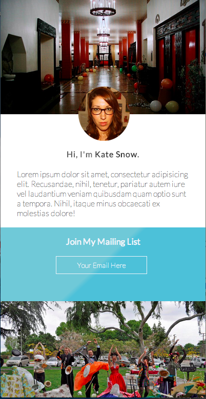
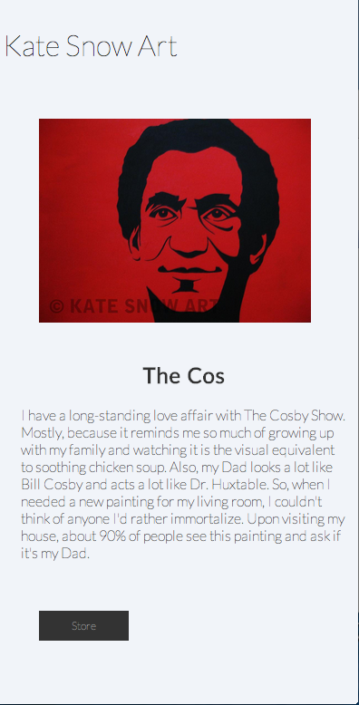
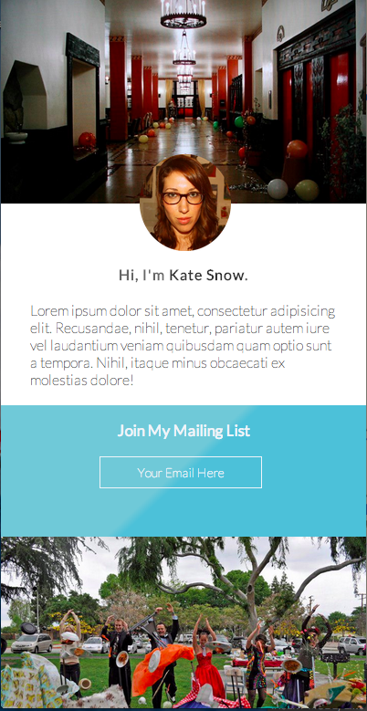
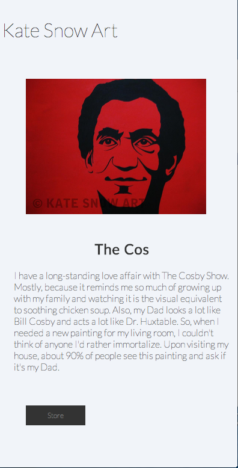

Hi, I'm Joel Brady.
I'm an aspiring designer/developer who finds inspiration in great ui|x, coffee, finding the gaps, todo apps, and my family. I intend for this to be a place where I tinker with the skills I acquire along the way. Take a look around - things are bound to change.


 


